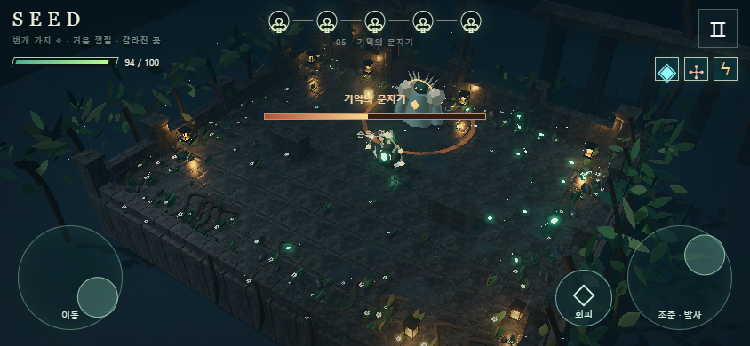

01 / FIRST SPROUT
SEED 잠든 정원
씨앗 하나로 시작해 법칙을 조합하세요. 네 개의 방을 지나면, 당신의 법칙을 배우는 문지기가 기다립니다.
게임 시작설치 없이 · PC와 모바일 · 모바일은 가로 화면 권장
JP MATH LAB / GAMES
작은 선택이 다른 움직임을 만듭니다.
게임 안에서 부딪히고, 조합하고, 다시 도전해 보세요.

01 / FIRST SPROUT
씨앗 하나로 시작해 법칙을 조합하세요. 네 개의 방을 지나면, 당신의 법칙을 배우는 문지기가 기다립니다.
게임 시작설치 없이 · PC와 모바일 · 모바일은 가로 화면 권장
왼쪽 스틱으로 이동하고, 오른쪽 스틱으로 조준하며 쏩니다. ◇ 버튼은 회피. 카드와 출구는 화면에서 누르세요.
WASD 이동 · 마우스 조준과 발사 · Space 회피 · E 출구 · P 또는 Esc 일시정지.